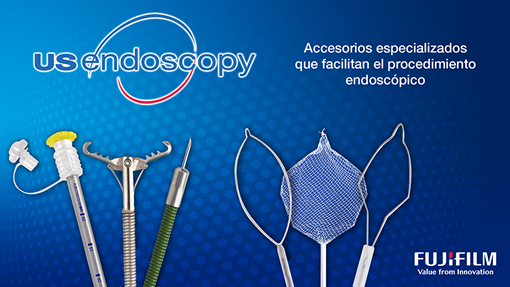
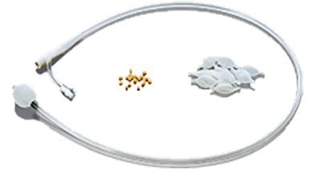
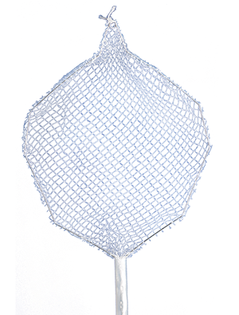
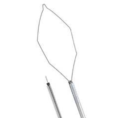
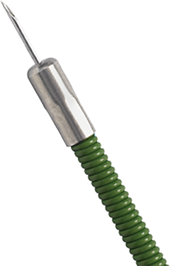
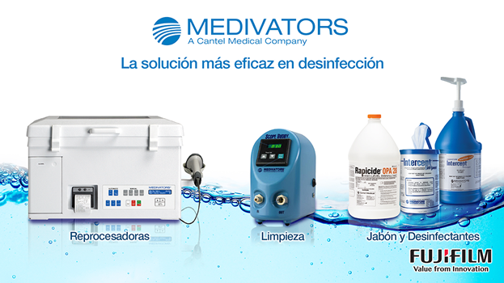
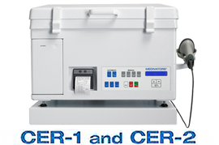
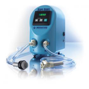
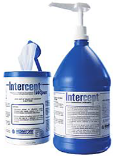

Dispositivos de endoscopia

Además de sus propios accesorios, FUJIFILM distribuye en México dispositivos para endoscopia desechables y reusables de la mejor calidad, de la marca US Endoscopy y Medivators.
ENTEROSCOPIA:
• Sobretubo y balones para enteroscopia de doble balón.

EXTRACCIÓN DE CUERPOS EXTRAÑOS:

• Roth Net: Red de extracción de cuerpos extraños y pólipos. Disponible en diferentes longitudes, tamaños de red y diámetros para máxima compatibilidad con cualquier endoscopio.
• Raptor: Pinza con combinación de dientes de ratón y cocodrilo.
POLIPECTOMÍA:

• i-snare: Dos dispositivos en uno. Aguja de escleroterapia y asa de polipectomía.
• Exacto: Asa de polipectomía con corte en frío para pólipos pequeños.
• Lariat: Asa de polipectomía caliente compatible con equipos de alta frecuencia.
CUIDADO Y LIMPIEZA:
• Pull Thru: Con ventosas que pueden limpiar por completo y en un solo movimiento los canales de trabajo.
• Cepillo de limpieza: Diferentes presentaciones variando en diámetro y longitud.
HEMOSTASIA:
• Carr-Locke: Aguja de escleroterapia con la mejor calidad en el mercado disponible en 23 y 25 Ga. Algunas de sus ventajas incluyen:
- Recubierta de teflón.
- Punta redondeada (de seguridad).
- Aguja retráctil (evita perforaciones de canal de trabajo).

• Articulator: Aguja de escleroterapia que cuenta con seguro luer lock en acero inoxidable disponible en 25 Ga.
• Sonda bipolar: Con cubierta hidrofílica que previene que el tejido se adhiera a la punta.
BIOPSIA Y CITOLOGÍA:
• Infinity: Cepillo de citología en diferentes presentaciones con diámetros que permiten realizar CPRE.
• Pinza de biopsia: Con la mejor calidad compatible con canales de trabajo terapéuticos.
Lavado y desinfección

Como parte de la solución de lavado y desinfección para equipos de endoscopia de cualquier marca y para seguir la correcta desinfección de alto nivel, FUJIFILM ofrece reprocesadoras de tubos de endoscopia, desinfectantes y detergentes.
REPROCESADORAS:
• Scope Buddy: Solución semiautomática de lavado a bajo costo.
• CER 1: Reprocesamiento de 1 tubo de endoscopia.
• CER 2: Reprocesamiento de 2 tubos de endoscopia simultáneamente.
• DSD-201: Reprocesamiento asíncrono de 2 tubos de endoscopia.
 
DESINFECTANTES Y DETERGENTES:
• Rapcide OPA 28: Desinfectante de 5 minutos de acción y 28 días de duración.
- Galón.
• INTERCEPT: Detergente enzimático.
- Galón.
- Toallas desinfectantes.

Registro Sanitario: 1262C2013 SSA
DATOS COMPLEMENTARIOS: En FUJIFILM de México queremos convertirnos en su mejor aliado, es por eso que estamos comprometidos con nuestros clientes y ofrecemos el mejor servicio posventa.
FUJIFILM DE MÉXICO, S.A. de C.V.
Teléfono: (55) 5263-5500
e-mail: endoscopia@fujifilm.com.mx
www.fujifilm.com.mx